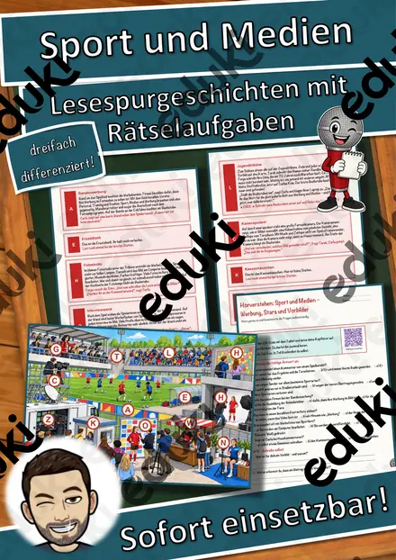
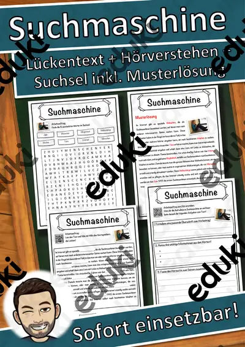
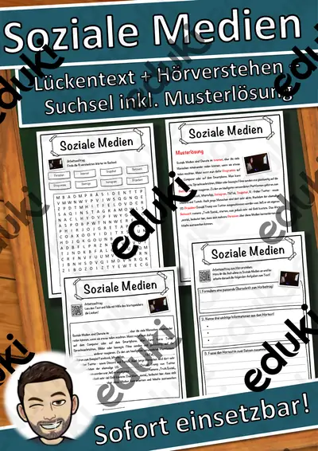
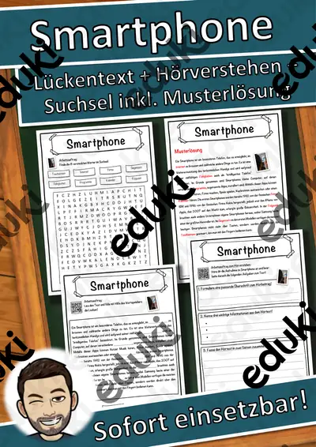

Medien und Internet: Arbeitsblätter für Klasse 3–9 (Sachunterricht)
Medienbildung zieht sich durch alle Fächer. Es geht um sicheren Umgang mit dem Smartphone, um Datenschutz, soziale Netzwerke und die Bewertung von Quellen bis hin zu künstlicher Intelligenz.
Zum Themenkern zählen Smartphone, soziale Medien und Datenschutz. Als Vertiefung bieten sich Suchmaschinen und Nachrichten prüfen an, am Ende steht oft künstliche Intelligenz.
Die Lehrpläne der Länder sehen das Thema im Fach Sachunterricht vor, in der Regel in den Klassen 3 bis 9. Als Ziel gilt: die Jugendlichen prüfen Quellen, schützen persönliche Daten und erkennen Falschmeldungen.
Im Alltag einer Lehrkraft zählt, dass Material sofort einsatzbereit ist: Die Blätter zu Medien und Internet greifen soziale Medien, Datenschutz und Suchmaschinen auf, lassen sich ausdrucken und kommen mit Lösungen, damit die Vorbereitung kurz bleibt. Zur Differenzierung eignen sich die Lesespurgeschichten mit ihren drei Niveaustufen.
Die Auswahl zum Thema umfasst derzeit 17 Titel, zum Beispiel Wie eine Nachricht durchs Internet reist, Das neue Smartphone und Suchmaschinen. Dazu zählen 6 Lesespurgeschichten, 1 Prüfungstraining und 10 Lückentexte mit Hörverstehen für Klasse 3–10. Ein gemeinsamer Faktencheck zu einer viralen Meldung zeigt Prüfwege besser als jede Regelliste.
Das gehört zum Thema
Passende Arbeitsblätter und Materialpakete

Wie eine Nachricht durchs Internet reist – Pakete, Router, Adressen – Lesespurgeschichte mit Rätselaufgaben (Klasse 6)

Das neue Smartphone – sicher einrichten – Lesespurgeschichte mit Rätselaufgaben (Klasse 7)

Suchmaschinen – richtig suchen und finden – Lesespurgeschichte mit Rätselaufgaben (Klasse 5)

Künstliche Intelligenz – wie Maschinen aus Beispielen lernen – Lesespurgeschichte mit Rätselaufgaben (Klasse 9)

Sport und Medien – Werbung, Stars und Vorbilder – Lesespurgeschichte mit Rätselaufgaben (Klasse 10)

Medien-Detektive unterwegs – Lesespurgeschichte mit Rätselaufgaben (Klasse 3)

Die Medien – Prüfungstraining Sozialkunde (Klasse 9)

Suchmaschine Lückentext mit Wortspeicher Hörverstehen und Suchsel

Soziale Medien Lückentext mit Wortspeicher Hörverstehen und Suchsel

Smartphone Lückentext mit Wortspeicher Hörverstehen und Suchsel

Datenschutz Lückentext mit Wortspeicher Hörverstehen und Suchsel

Künstliche Intelligenz Lückentext mit Wortspeicher Hörverstehen und Suchsel

Computerspiel Lückentext mit Wortspeicher Hörverstehen und Suchsel

Nachrichten Lückentext mit Wortspeicher Hörverstehen und Suchsel

Medien Lückentext mit Wortspeicher Hörverstehen und Suchsel

Handy Lückentext mit Wortspeicher Hörverstehen und Suchsel

Internet Lückentext mit Wortspeicher Hörverstehen und Suchsel
Häufige Fragen
Für welche Klassenstufe passen die Arbeitsblätter zu Medien und Internet?
Der Schwerpunkt liegt auf Klasse 6; insgesamt deckt die Auswahl (17 Titel) Klasse 3–10 ab. In der Beschreibung jedes Materials steht die empfohlene Stufe.
Welche Inhalte decken die Materialien zu Medien und Internet ab?
Die Materialien arbeiten an Smartphone, soziale Medien und Datenschutz und gehen dann weiter zu Suchmaschinen, Nachrichten prüfen und künstliche Intelligenz. Vorab lohnt ein Blick in den Lehrplan des eigenen Bundeslandes.
Wie setze ich Medien und Internet im Unterricht ein?
Beginnen Sie mit einem Einstieg zu Smartphone und ergänzen Sie nach Bedarf. Ein gemeinsamer Faktencheck zu einer viralen Meldung zeigt Prüfwege besser als jede Regelliste.
Mehr Material nach Fach und Klasse
- Alle Materialien Deutsch
- Arbeitsblätter Deutsch Klasse 3
- Arbeitsblätter Deutsch Klasse 4
- Arbeitsblätter Deutsch Klasse 5
- Arbeitsblätter Deutsch Klasse 6
- Arbeitsblätter Deutsch Klasse 7
- Arbeitsblätter Deutsch Klasse 8
- Arbeitsblätter Deutsch Klasse 9
- Unterrichtsmaterial Klasse 3
- Unterrichtsmaterial Klasse 4
- Unterrichtsmaterial Klasse 5
- Unterrichtsmaterial Klasse 6
- Unterrichtsmaterial Klasse 7
- Unterrichtsmaterial Klasse 8
- Unterrichtsmaterial Klasse 9
Verwandte Lehrplanthemen
- Geld und Konsum (Sachunterricht, Klasse 2–10)
- Halloween (Sachunterricht, Klasse 2–6)
- Luft und Atmosphäre (Sachunterricht, Klasse 2–7)
- Sterne, Sternbilder und Astronomie (Sachunterricht, Klasse 4–8)
- Sonnensystem und Planeten (Sachunterricht, Klasse 3–8)